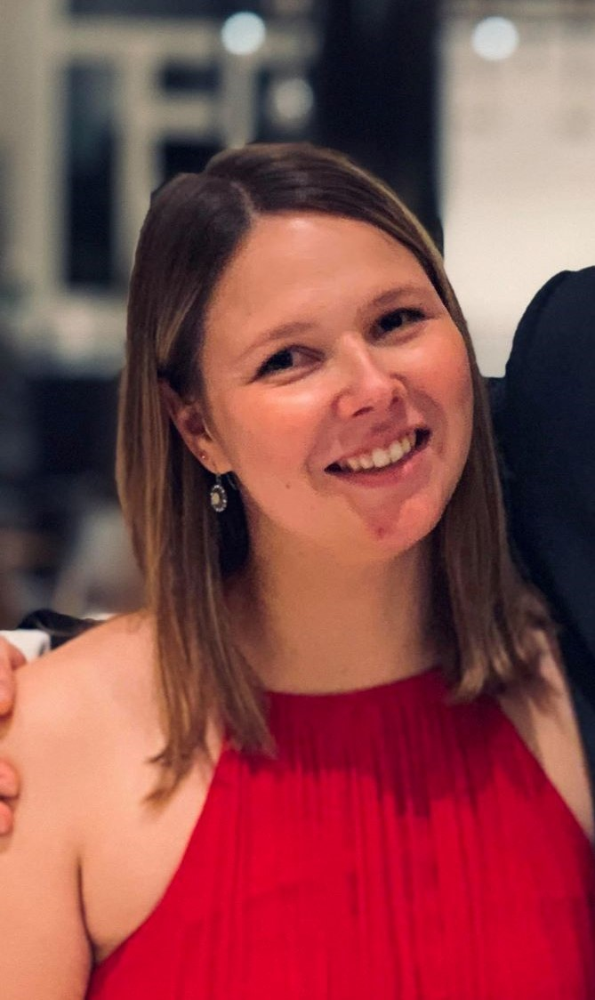

Revystyret
Trenger tekst

Revysjef: Merete Hvattum
Tekst om lederen
Nestleder: Nan Amalie Videng
Jeg heter Nan Amalie Videng og er nestleder for Naborevyen
2019/2020. Jeg går 5. året på lektorstudiet, med hovedfag matematikk.
Jeg har vært med i Naborevyen siden den andre revyen, I Grevens Tid,
samt at jeg de to siste årene har vært kostyme- og rekvisittsjef.
I år ga jeg den stafettpinnen videre til Eirin, og tok på meg rollen
som nestleder.
Som nestleder i revyen fungerer man som revysjefens høyre hånd.
I tillegg får man gjerne tildelt tittelen «potet», som egentlig er
en ganske bra beskrivelse. En potet, som en nestleder, kan brukes
til omtrent alt! Jeg hjelper altså til der det trengs, fra stort
til smått.